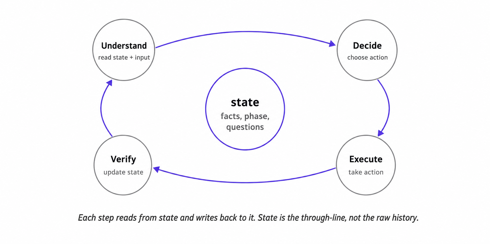

State, not transcript, is agent memory
Conversation history looks like memory, so many agents use it that way. Each turn gets appended to the transcript, the transcript gets passed back to the model, and the model is expected to remember what matters. This works in short demos because the conversation is small and the stakes are low. It breaks when the agent has to make reliable decisions across many turns.
The intake agent makes the failure concrete. On turn 2, the user said, “We’re on the enterprise plan, and the dashboard is the only feature we use.” On turn 9, the agent asked, “Just to confirm, are you on the standard or enterprise plan?” On turn 12, the handoff record went out with plan_tier: unknown.
The system failed because it never stored the plan tier in state. The answer stayed buried in the transcript instead of becoming plan_tier = enterprise. Any fact that affects future behavior should become a field that later steps can read.
The previous article argued that the harness is the product. State is the first concrete part of that harness: the facts, uncertainties, workflow status, and pending actions that the runtime and model read before the next step.
Raw history is a record, not a decision layer
Raw history preserves the original material, including user messages and tool outputs. The transcript may contain the answer, but later steps need explicit fields to read.
For the intake agent, the handoff writer needed this field:
"plan_tier": {
"value": "enterprise",
"confidence": "confirmed",
"source": "user_turn_2",
}That field lets the agent skip a redundant plan-tier question, lets the handoff writer emit plan_tier: enterprise, and lets a required-field check decide whether the handoff is ready.
State also records reliability. If a user first says, “I think it might be the migration,” and later says, “Support confirmed it was the migration,” state should mark one claim as uncertain and the other as confirmed. The transcript preserves both sentences; state tells the system how to use them.
The same issue appears in handoff readiness. If the handoff requires plan_tier, affected_feature, and confirmed_root_cause, state should show which fields are filled, which are uncertain, and which still need follow-up. The agent can then read state instead of reconstructing the situation from the transcript every turn.
State turns remembered facts into usable facts
After turn 2, the intake agent should have written this state:
state = {
"facts": {
"plan_tier": {
"value": "enterprise",
"confidence": "confirmed",
"source": "user_turn_2",
},
"affected_feature": {
"value": "dashboard",
"confidence": "confirmed",
"source": "user_turn_2",
},
},
"open_questions": [],
"workflow_phase": "discovery",
"ready_for_handoff": False,
}On turn 9, the agent checks state["facts"]["plan_tier"] before asking another plan-tier question. The field already says enterprise, with confidence = confirmed, so the agent moves on. On turn 12, the handoff writer reads the same field and emits plan_tier: enterprise instead of plan_tier: unknown.
Store information the system needs later in named fields, and update those fields when new evidence arrives. The schema depends on the agent, but the rule stays the same: operational facts should not live only inside raw text.
State should stay focused. It does not need every utterance, retrieved passage, or intermediate model output. Those belong in raw history or trace. State should contain the information that changes future behavior: filled values, confidence, unresolved questions, workflow phase, proposed actions, and verification status.
State needs belief status
A weak state object stores only values:
"root_cause": "migration"That field alone does not tell the system how safely it can rely on the value. A better state object stores belief status alongside the value:
"root_cause": {
"value": "migration",
"confidence": "uncertain",
"source": "user_turn_5",
}The confidence label tells the harness whether to use, verify, qualify, or block the field. A guessed root cause and a confirmed root cause should not drive the same behavior.
Five labels cover many production cases:
| Label | Meaning | Harness behavior |
|---|---|---|
confirmed |
Safe to rely on | Use it, summarize it, or act on it if other gates pass |
uncertain |
Plausible, but not safe yet | Ask, verify, or avoid treating it as fact |
needs_verification |
Requires a specific check | Run a lookup, validator, or read-after-write step |
stale |
Was once true but may no longer be true | Refresh before relying on it |
contradicted |
Conflicting evidence exists | Preserve both sides and resolve before acting |
Contradictions need to remain visible. If the user first says, “We do not have internal logs for this system,” and later says, “The application logs show the migration completed successfully,” the updater should preserve both statements, mark the relevant field as contradicted or needs_verification, and leave the next step with a clear ambiguity to resolve.
State should preserve ambiguity in a form the next decision can see.
Raw history, state, and trace serve different jobs
Raw history, state, and trace overlap, but each one has a different job.
| Artifact | Job | Intake example |
|---|---|---|
| Raw history | Preserves the original material | The user said, “We’re on the enterprise plan…” |
| State | Stores the current working memory | plan_tier = enterprise, confidence = confirmed |
| Trace | Records what happened during the run | Turn 2 updated plan_tier; turn 9 skipped a redundant question; turn 12 produced the handoff |
Raw history preserves nuance, tone, and provenance. Trace explains how the system behaved. State guides the next decision. If a fact affects what the system asks, writes, summarizes, verifies, or hands off, it belongs in state.
Different agents need different state schemas
State should match the decisions the agent has to make.
| Agent type | State needs to record |
|---|---|
| Intake agent | Confirmed facts, uncertain facts, open questions, handoff readiness |
| Scheduling assistant | Candidate events, selected target, proposed change, approval, verification status |
| Docs Q&A agent | Retrieved refs, grounded claims, evidence mapping, validation status |
A scheduling assistant must know whether it has selected the right calendar event before it can reschedule anything. A docs Q&A agent must know whether each claim is supported by retrieved evidence before it can answer. An intake agent must know whether it has enough confirmed information to produce a useful handoff.
State holds the information the next decision needs.
State should answer four questions
A useful state object answers four questions at each step:
- What do we currently believe?
- How sure are we?
- What remains unclear?
- What stage of the workflow are we in?
These questions expose whether state is usable. Without those fields, the model has to reconstruct the situation from raw history. It may treat guesses as facts, skip required questions, or advance the workflow too early.
State gives the model and runtime stable fields to read. The model uses state to decide what to say next; the runtime uses state to decide what is allowed next.
State changes as the workflow runs
State is maintained throughout the workflow. Each meaningful step reads from it, updates it, and leaves the system in a clearer position than before.
A typical loop looks like this:
- Understand. Read the current state and the new input. Update facts when the input is clear. Mark uncertainty when it is not.
- Decide. Choose the next action: ask a clarifying question, call a tool, draft a summary, produce a handoff, or refuse.
- Execute. Take the action. If a tool is called, capture its inputs and outputs. If a write happens, record the attempt.
- Verify. Check whether the action did what it was supposed to do. Update state with what is now known.

The loop appears in different forms across agents. A scheduling assistant may run it across target selection, approval, execution, and verification. The names change, but the pattern stays the same: read state, choose the next move, execute it, and update state based on what happened.
Verification keeps state honest. After a write, the system should check the external source of truth before treating state as updated. For example, after rescheduling a meeting, it should confirm that the calendar shows the new time.
Gates read state
Gates enforce policies by inspecting state. A handoff gate can block missing fields, uncertain facts, or unresolved questions only if state records them explicitly.
if action == "produce_handoff":
assert state["facts"]["plan_tier"]["confidence"] == "confirmed"
assert state["facts"]["affected_feature"]["confidence"] == "confirmed"
assert state["ready_for_handoff"] is TruePrompts suggest behavior; runtime checks enforce it.
Common mistakes
State usually fails in predictable ways:
- No operational state: raw history becomes state, and the model has to reconstruct the situation every step.
- Too much state: every utterance, passage, draft, and tool output gets persisted, making state as noisy as the transcript.
- No confidence labels:
"root_cause": "migration"looks settled even if the user only guessed it. - Silent contradiction handling: conflicting evidence gets overwritten instead of staying visible until the system resolves it.
- State drift: failed writes, stale retrieved passages, and user corrections do not update the stored belief.
Use a simple test when deciding what belongs in state: will the system behave worse later if this information only lives in raw history or trace? Put it in state only when the answer is yes.
State is the system’s memory
The transcript records what was said; state records what the system can rely on.
The intake agent needed to store two confirmed facts: the user was on the enterprise plan, and the dashboard was the affected feature. Once those facts became state, later steps could use them. The agent could avoid a redundant question, produce a better handoff, and expose unresolved fields before claiming the workflow was ready.
State gives gates, tools, verification steps, and traces concrete fields to read and update. Runtime control reads state before acting. Gates and tool contracts decide what the system is allowed to do with that memory.